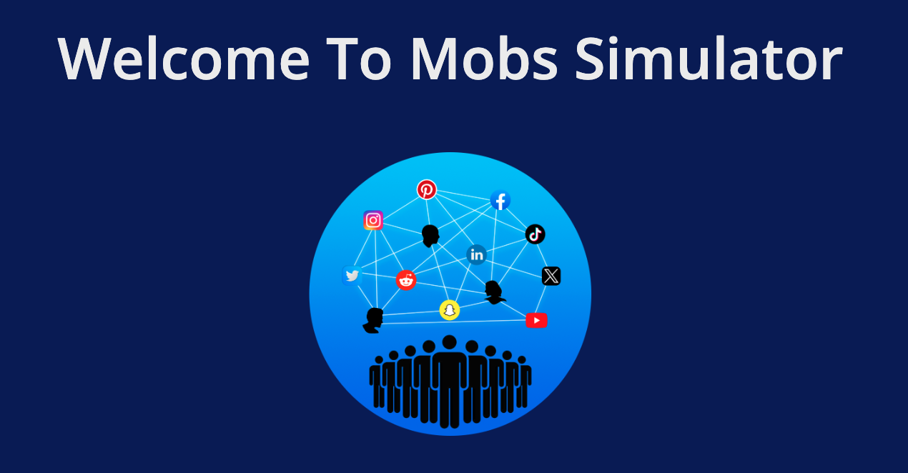
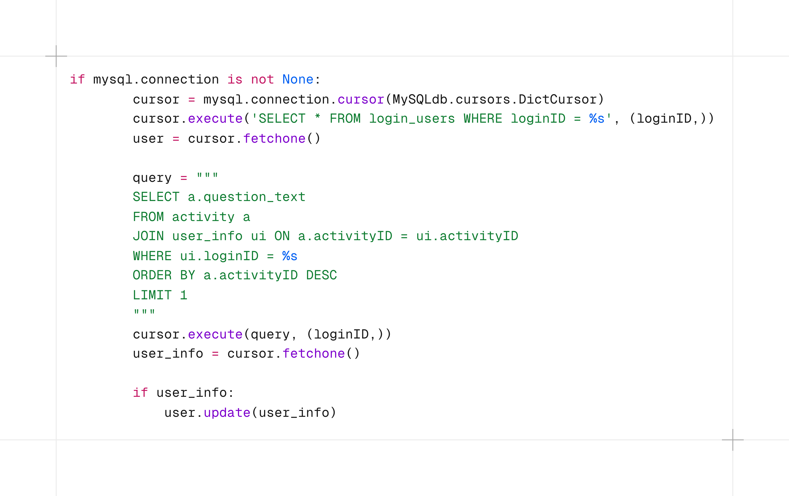
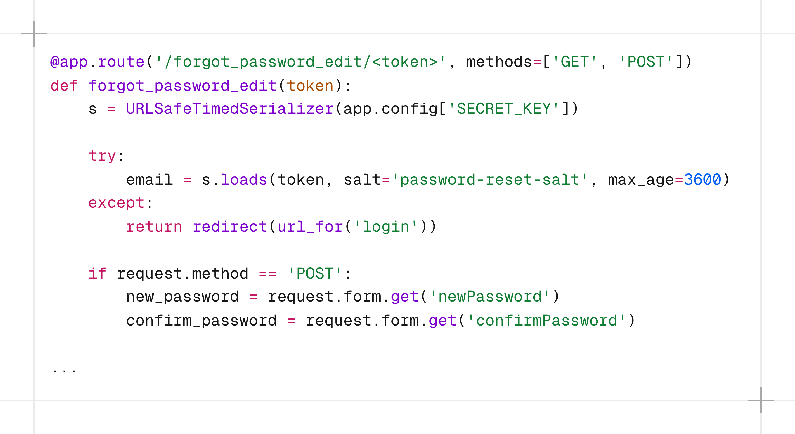

Mobs
May 2024 - Present
"ISIS terrorists in Samer Al-khateeb's ↗ home country of Iraq ginned up mobs on social media to pull in recruits, watch violent propaganda videos and launch coordinated attacks on enemies via Twitter. Now Al-khateeb, an assistant professor of computer science, design and journalism at Creighton University, has received a three-year, $585,000 grant from the Air Force to learn more about how social media mobs form and succeed." - Omaha World Herald (2022)
Within my time on the Mobs Research Team, I had the pleasure of designing databases, back-end routing, security functionality, and utilizing API's for a better user experience.

Database Design
This project was my first large scale foray into database design. We needed a solution that would be flexible, secure, but also capable of scaling as the application grew.
Since the application was based around Flask, the decision was made to use MySQL since it integrated nicely.
User data was collected and stored within our database in order to support a smooth experience when using the application.

Backend Routing
Due to the nature of Flask, rendering webpages is handled with routes
My responsibility was to create routes that allowed the user a simple workflow while also being capable of handling large data queries.
Due to the nature of the data that we were handling, secuirty was top of mind. This meant jumping through hoops with salting and securing connections.

APIs
One of my favorite things that I worked on was the usage of the SendGrid API to send users a password reset link.
This was some of my first experience working with APIs in an engineering setting, so this was invaluable experience.
The end result was a seamless experience for the user that meant they could reset their password without any hassle.